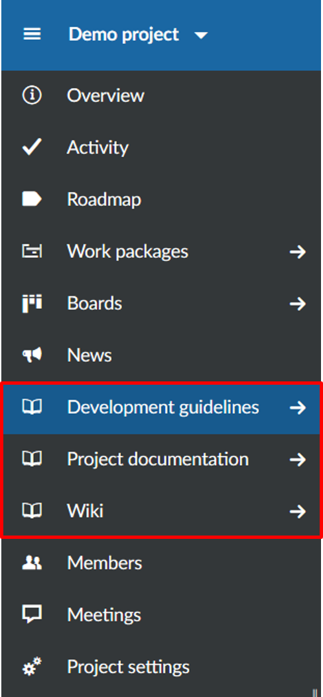
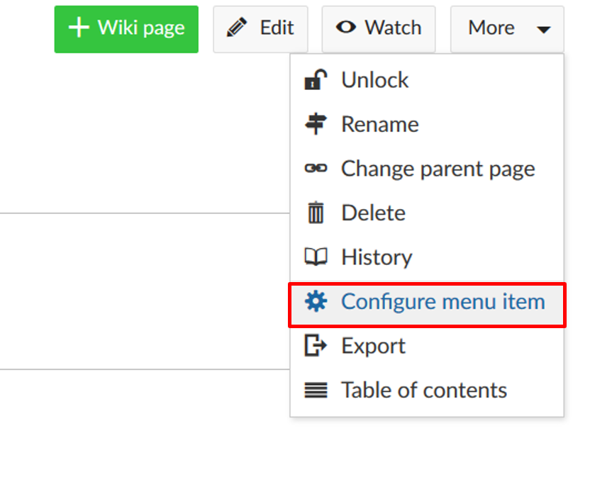
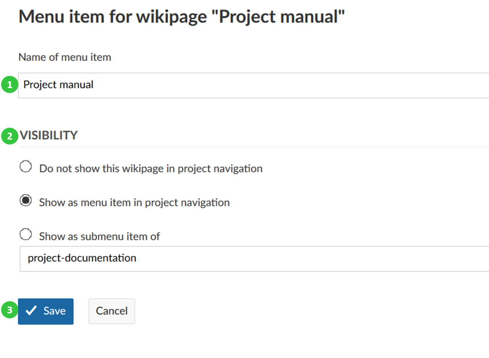
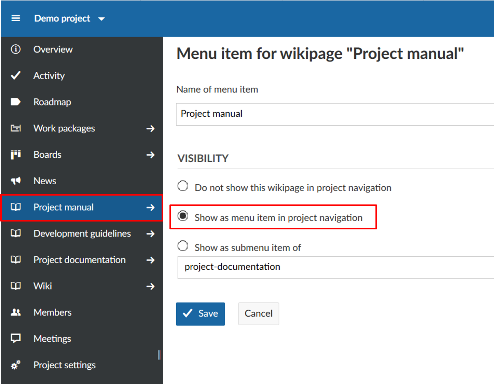
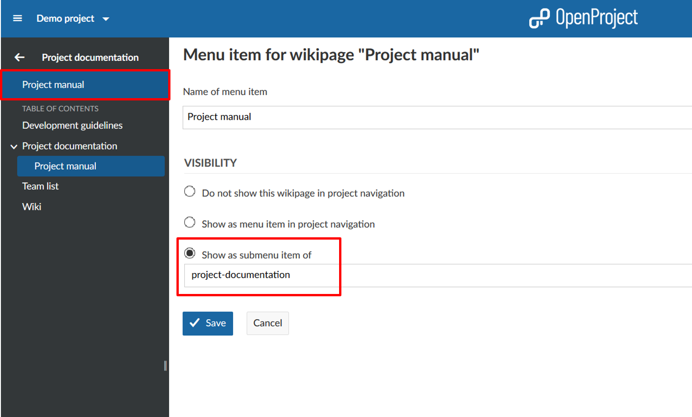

You can add a wiki page directly to the project menu as a separate menu item to have the pages easily accessible for all team members.
Wiki menu items are marked with the wiki icon to clearly identify the pages in the project menu.

To add a wiki page as a menu item to the project menu, select the More functions button on top of a wiki page and choose the Configure menu item topic.
You can configure the menu items and choose between different visibility options.
(1) You can give the menu item in the project menu a different name than the wiki page itself by changing the Name of menu item in the list.
(2) You can set different visibility options:
(4) Save your changes to the wiki page menu.

Visibility show as menu item in the project navigation:

Visibility show as submenu item of project-documentation:

The default option is Do not show this wiki page in project navigation. Check this option if you want to undo earlier changes and hide the wiki page from the project menu.